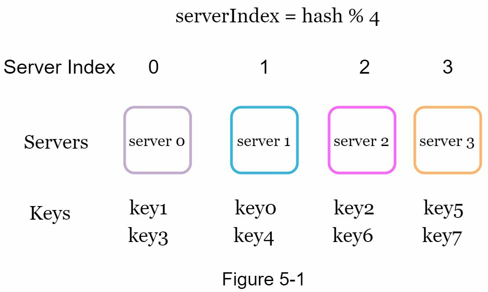
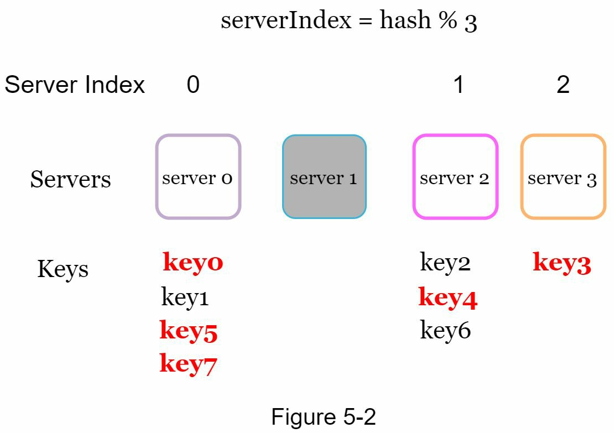
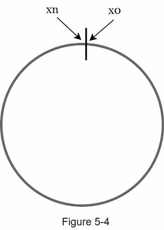
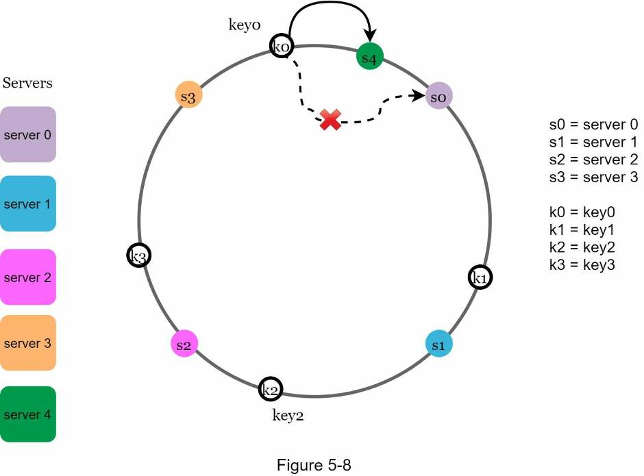
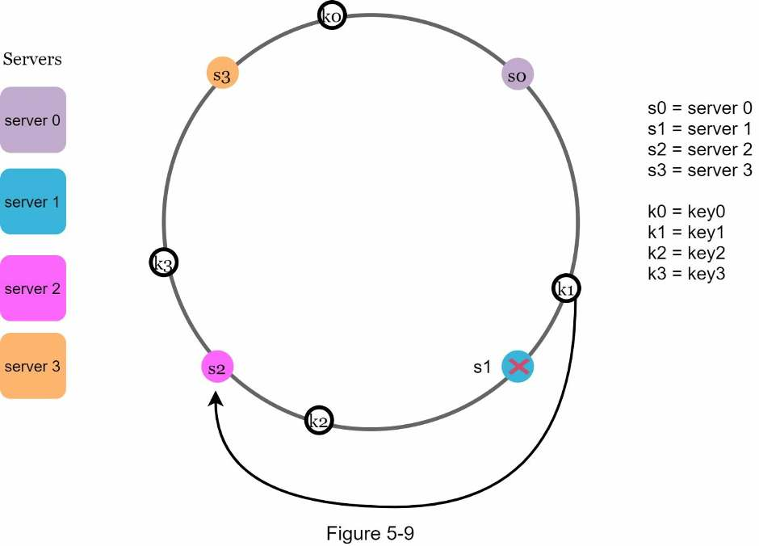
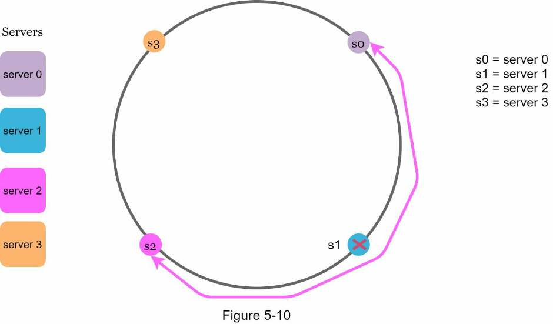
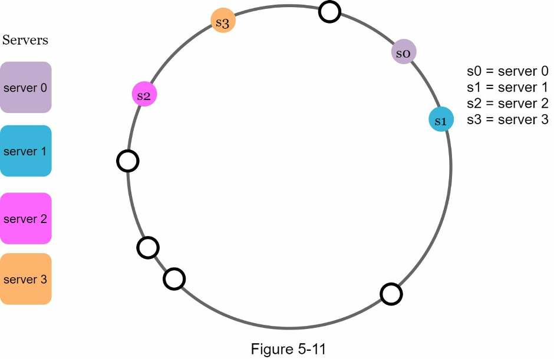
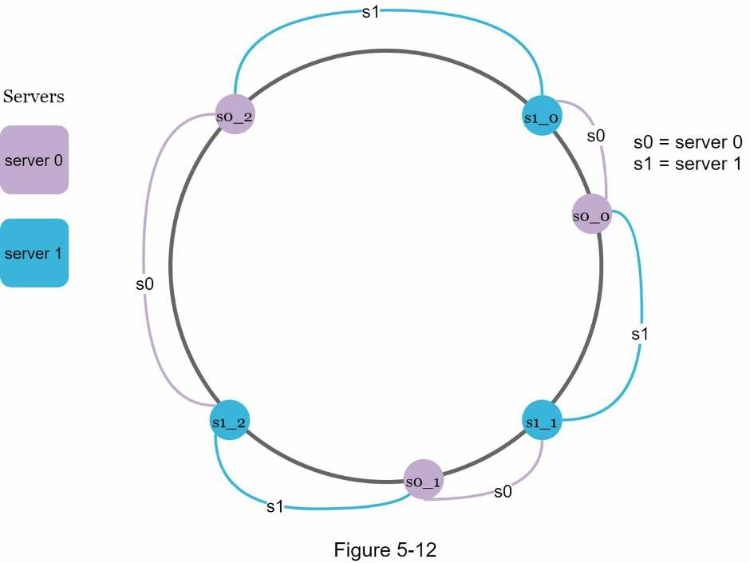
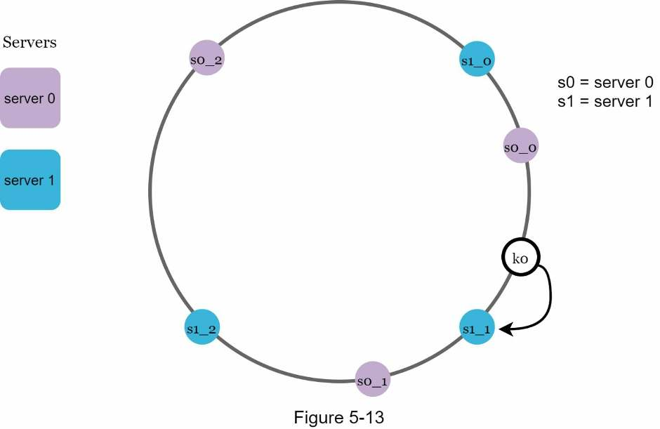

Chapter 5 · Building block
Design Consistent Hashing
Why hash(key) % N reshuffles almost every key when a server joins or leaves, how a hash ring limits the damage to one slice, and how virtual nodes keep the load even.
TL;DR
- Problem: with
serverIndex = hash(key) % N, adding or removing one server remaps most keys, causing a storm of cache misses. - Consistent hashing: on a resize only k/n keys move on average (k keys, n slots), not nearly all.
- Hash ring: the hash space (SHA-1: 0 to 2160 − 1) with its ends joined. Servers (by IP or name) and keys are hashed onto it with the same function, no modulo.
- Lookup: from the key, go clockwise to the first server.
- Add/remove a server: only keys between that node and the previous server (anticlockwise) move.
- Basic ring's two flaws: unequal partitions, and keys piling up on one server.
- Fix: virtual nodes, many ring points per server. 100 per server → standard deviation ≈ 10% of the mean; 200 → ≈ 5%. Cost: more metadata.
- Used by: Dynamo, Cassandra, Discord, Akamai CDN, Maglev.

How to use this in an interview
Bring it up whenever data or requests must be spread across servers that come and go: sharded caches, key-value stores, partitioned databases, load balancers.
- Name the problem "With
hash % N, changing N remaps most keys, so caches miss everywhere at once." - Draw the ring Hash space 0 to 2160 − 1 bent into a circle. Place servers and keys on it with the same hash function.
- Explain lookup and changes A key belongs to the first server clockwise. Adding or removing a server moves only the keys in one range: about k/n of them.
- Fix the flaws with virtual nodes One point per server gives uneven partitions and skewed keys. Give each server 100–200 virtual nodes (σ drops from ~10% to ~5% of the mean), at the cost of more metadata.
- Close with proof it works Dynamo, Cassandra, Discord, Akamai and Maglev all use it.
The rehashing problem
hash(key) % N spreads keys evenly, but changing N moves almost every key.
A common way to balance load across N cache servers is serverIndex = hash(key) % N, where N is the size of the server pool. It works while the pool is fixed and data is evenly spread. In the book's example (4 servers, 8 keys), hash(key0) % 4 = 1, so clients fetch key0 from server 1.
Now server 1 goes offline and N becomes 3. Hashes don't change, but hash % 3 gives new indexes, which map to server 0, server 2 and server 3.
| Key | hash | hash % 4 → server | hash % 3 → server | Moved? |
|---|---|---|---|---|
| key0 | 18358617 | 1 → server 1 | 0 → server 0 | Yes (server 1 is gone) |
| key1 | 26143584 | 0 → server 0 | 0 → server 0 | No |
| key2 | 18131146 | 2 → server 2 | 1 → server 2 | No |
| key3 | 35863496 | 0 → server 0 | 2 → server 3 | Yes, needlessly |
| key4 | 34085809 | 1 → server 1 | 1 → server 2 | Yes (server 1 is gone) |
| key5 | 27581703 | 3 → server 3 | 0 → server 0 | Yes, needlessly |
| key6 | 38164978 | 2 → server 2 | 1 → server 2 | No |
| key7 | 22530351 | 3 → server 3 | 0 → server 0 | Yes, needlessly |
5 of 8 keys move, though only key0 and key4 lived on server 1. Most cache clients now ask the wrong server: a storm of cache misses.


How consistent hashing works
Put servers and keys on the same ring. Each key belongs to the next server clockwise.
Definition
Hash space and hash ring
Use SHA-1 as the hash function f. Its output range, the hash space, runs from x0 = 0 to xn = 2160 − 1. Join the two ends of that range and you get a hash ring.

Hash servers
Using the same f, place each server on the ring by hashing its IP address or name (the example has s0 to s3).
Hash keys
Hash the keys (key0 to key3) onto the same ring. This is a different hash function from the rehashing example, and there is no modulo.
Server lookup
From the key's position, go clockwise until you reach a server: key0 → server 0, key1 → server 1, key2 → server 2, key3 → server 3.
Adding and removing a server
A change to the pool only moves the keys in one slice of the ring.
Add a server
Server 4 lands between key0 and server 0. Clockwise from key0, the first server is now s4, so only key0 moves (server 0 → server 4). key1, key2 and key3 stay put.

Remove a server
Remove server 1 and only key1 is remapped, to server 2 (the next server clockwise).

Two problems with the basic approach
One point per server leaves partitions uneven and lets keys pile up on one server.
The basic algorithm, introduced by Karger et al. at MIT, has two steps:
- Map servers and keys onto the ring with a uniformly distributed hash function.
- Go clockwise from the key's position to the first server.
Problem 1 · Partitions can't stay the same size
A partition is the hash space between adjacent servers. As servers are added and removed, some partitions become very small and others fairly large. In Figure 5-10, removing s1 makes s2's partition twice as large as those of s0 and s3.

Problem 2 · Keys can be unevenly distributed
In Figure 5-11 the servers sit close together, so most keys are stored on server 2, while server 1 and server 3 hold no data.

The fix for both: virtual nodes (also called replicas).
Virtual nodes
Represent each server by many points on the ring, so it owns many small partitions instead of one big one.
A virtual node refers to a real node, and each server appears on the ring several times. In Figure 5-12, server 0 is s0_0, s0_1, s0_2 and server 1 is s1_0, s1_1, s1_2. Three is arbitrary; real systems use far more. Each server now manages several partitions.

Lookup: go clockwise to the first virtual node and map it to its server. In Figure 5-13, k0 reaches s1_1, so it is stored on server 1.

How many virtual nodes?
More virtual nodes → smaller standard deviation (how spread out the data is) → more balanced load. An online experiment measured:
Finding affected keys
From the changed node, walk anticlockwise to the previous server. That range is the only data that moves.
Using the rings from Figures 5-8 and 5-9:
| Event | Affected range | Keys in that range move to |
|---|---|---|
| Add server 4 | From s4 (the new node) anticlockwise to the first server found, s3 | s4 |
| Remove server 1 | From s1 (the removed node) anticlockwise to the first server found, s0 | s2, the next server clockwise |
100 keys (dots) and your servers share one ring. Each arc is colored by the server that owns it, and each key takes the color of the first server clockwise. Add or remove a server: the keys that move are enlarged and outlined. Then raise the virtual nodes and watch the shares even out. With the starting 4 servers, σ falls from about 70% of the mean (one point each) to about 11% at 100 and 5% at 200 virtual nodes, close to the book's numbers.
Wrap up
Consistent hashing minimizes data movement and evens out load, which is why so many large systems use it.
Benefits
- Minimal redistribution: few keys move when servers are added or removed.
- Easy horizontal scaling: data is spread more evenly across servers.
- Mitigates the hotspot key problem: heavy traffic to one shard can overload its server (imagine Katy Perry, Justin Bieber and Lady Gaga all on one shard). More even distribution makes that less likely.
Used in real systems
| System | Where consistent hashing is used |
|---|---|
| Amazon Dynamo | The database's partitioning component |
| Apache Cassandra | Data partitioning across the cluster |
| Discord | The chat application |
| Akamai | Content delivery network |
| Maglev | Google's network load balancer |
Self-test
Why does serverIndex = hash(key) % N break when a server is added or removed?
N changes, so hash % N gives a different index for most keys, not just those on the changed server. Clients go to the wrong servers and you get a storm of cache misses.
In the book's example (8 keys, 4 servers, server 1 goes offline), how many keys move, and how many had to?
5 of 8 move (key0, key3, key4, key5, key7). Only key0 and key4 were on server 1; the other three moved needlessly.
By the definition, how many keys are remapped on average when a consistent-hashing table is resized?
k/n, where k is the number of keys and n the number of slots. A traditional hash table remaps nearly all keys.
What is the hash space if you use SHA-1, and how do you get the ring?
0 to 2160 − 1. Join the two ends of that range so the last value wraps around to the first.
How are servers and keys placed on the ring, and how do you find a key's server?
Hash servers (by IP or name) and keys with the same function, with no modulo. From the key's position, go clockwise to the first server.
Server 4 is added between key0 and server 0. Which keys move?
Only key0, which moves from server 0 to server 4. In general, only keys between the new node and the previous server anticlockwise move, and all of them go to the new node.
Server 1 is removed. Where do its keys go?
To the next server clockwise (server 2). The affected range runs from s1 anticlockwise to s0. Nothing else moves.
What are the two problems with the basic (one point per server) ring?
- Partitions can't stay equal as servers come and go (removing s1 makes s2's partition twice as large as s0's and s3's).
- Keys can be unevenly distributed (most keys on server 2, none on servers 1 and 3).
What is a virtual node, and how does lookup work with them?
One of many points on the ring that stand for a real server (s0_0, s0_1, s0_2 for server 0). Go clockwise to the first virtual node and map it to its server.
What standard deviation do 100 and 200 virtual nodes give, and what is the cost?
About 10% of the mean with 100 and about 5% with 200. More virtual nodes need more space to store their metadata, so tune the number to the system's needs.
Name three benefits of consistent hashing.
Few keys move when servers change, horizontal scaling is easy because data is spread evenly, and it mitigates hotspot shards (several celebrities' data on one shard).
Name real systems that use consistent hashing.
Amazon Dynamo (partitioning), Apache Cassandra (data partitioning), Discord, the Akamai CDN, and Google's Maglev load balancer.
Terms to know
- Rehashing problem
- With
hash % N, changing N remaps most keys to different servers. - Consistent hashing
- Hashing in which resizing remaps only about k/n keys on average.
- Hash space
- The output range of the hash function: 0 to 2160 − 1 for SHA-1.
- Hash ring
- The hash space with its two ends joined, so positions wrap around.
- Partition
- The hash space between two adjacent servers on the ring.
- Virtual node
- One of many ring positions that stand for the same real server (also called a replica).
- Standard deviation
- How spread out the data is. Lower means a more even load across servers.
- Hotspot
- A shard that gets so much traffic its server is overloaded.
Book references (go deeper)
- Consistent hashing (Wikipedia)
- Consistent Hashing (Tom White)
- Dynamo: Amazon's Highly Available Key-value Store
- Cassandra: A Decentralized Structured Storage System
- How Discord Scaled Elixir to 5,000,000 Concurrent Users
- CS168: The Modern Algorithmic Toolbox, Lecture #1: Introduction and Consistent Hashing
- Maglev: A Fast and Reliable Software Network Load Balancer